轻门厅 · 留白电视墙 · 弧光梦幻帘
依据用户PDF参考调整。入口取消L形长边，镜位局部横向余量约1254mm；暖白浅木，奶黄柜保留。矮茶桌高380、茶椅座高230mm。尺寸为当前模型提案。
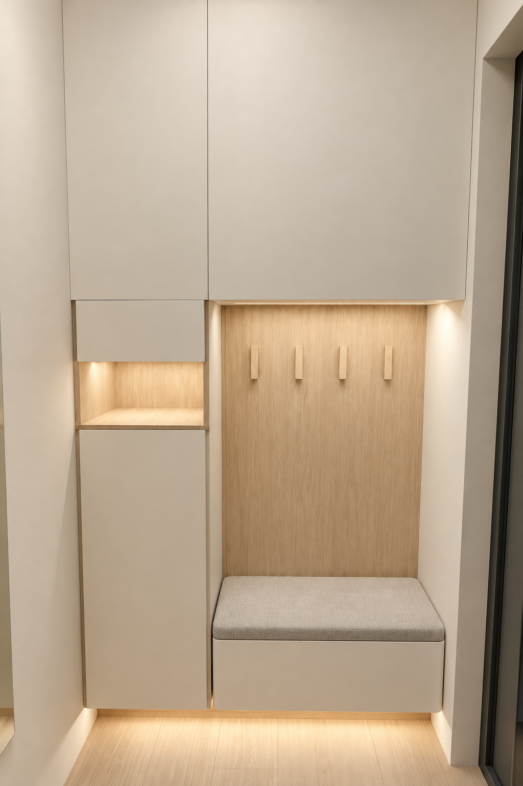
门厅 · 一字柜与换鞋位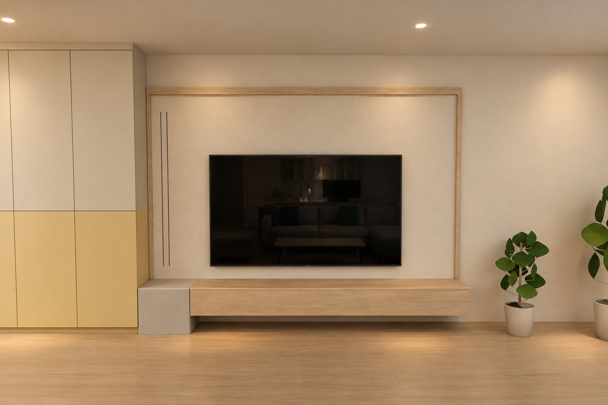
电视墙 · 留白与悬空柜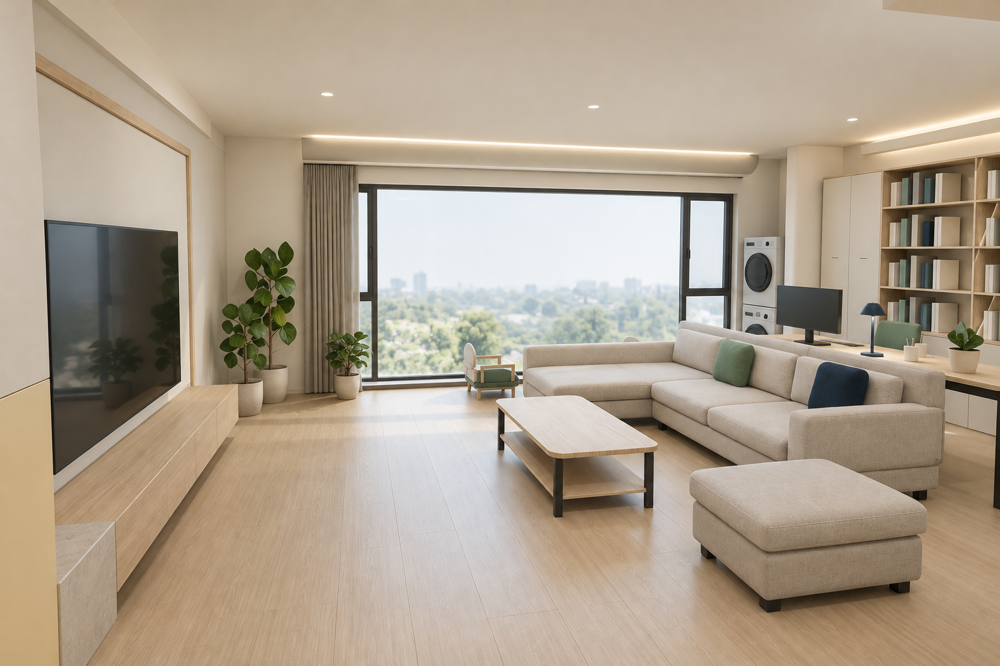
客厅 · 日间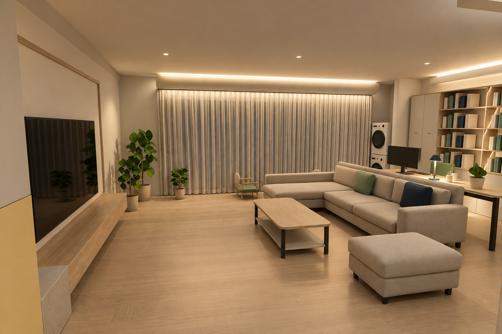
客厅 · 梦幻帘晚间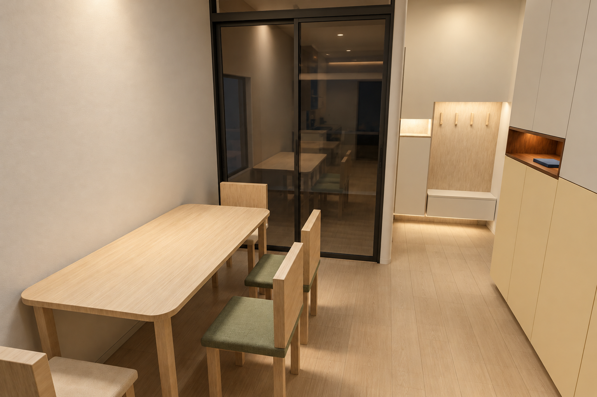
餐厅 · 四椅靠墙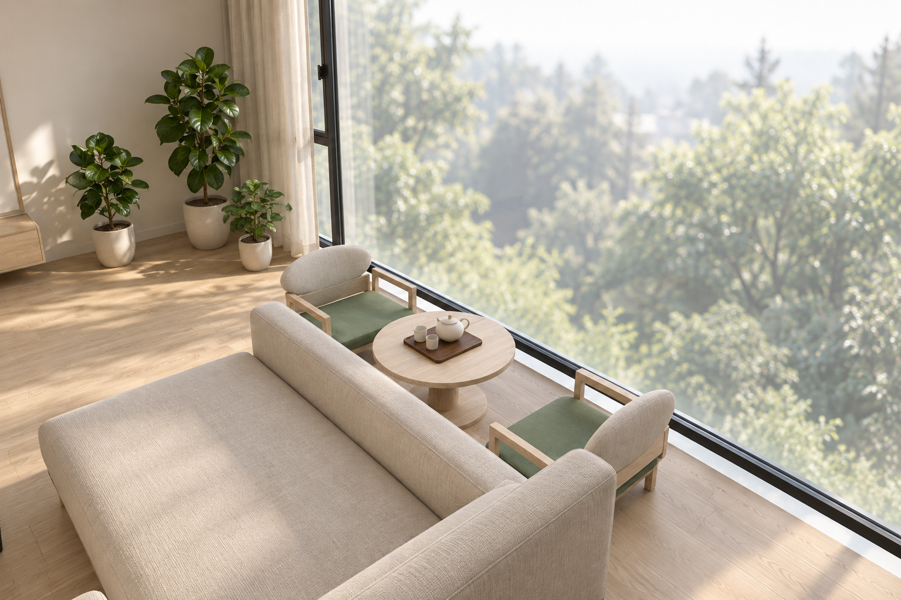
阳台 · 矮茶席查看同版模型实体参考图
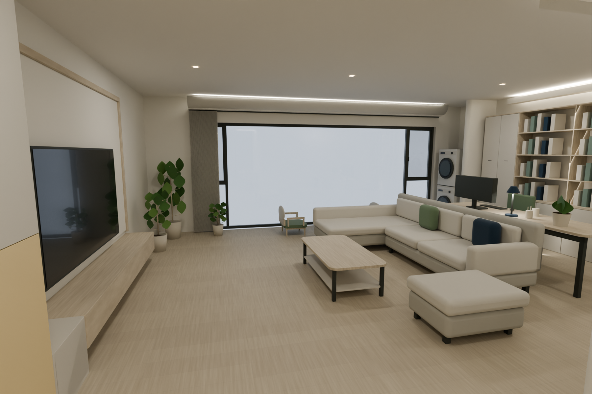
客厅 · 日间 · 实体参考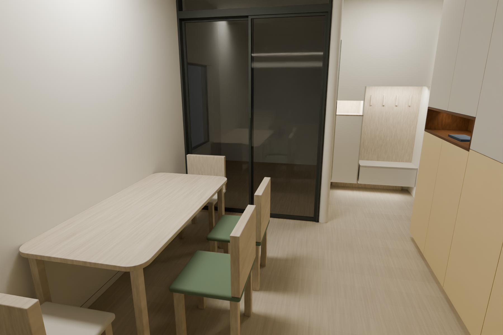
餐厅 · 四椅靠墙 · 实体参考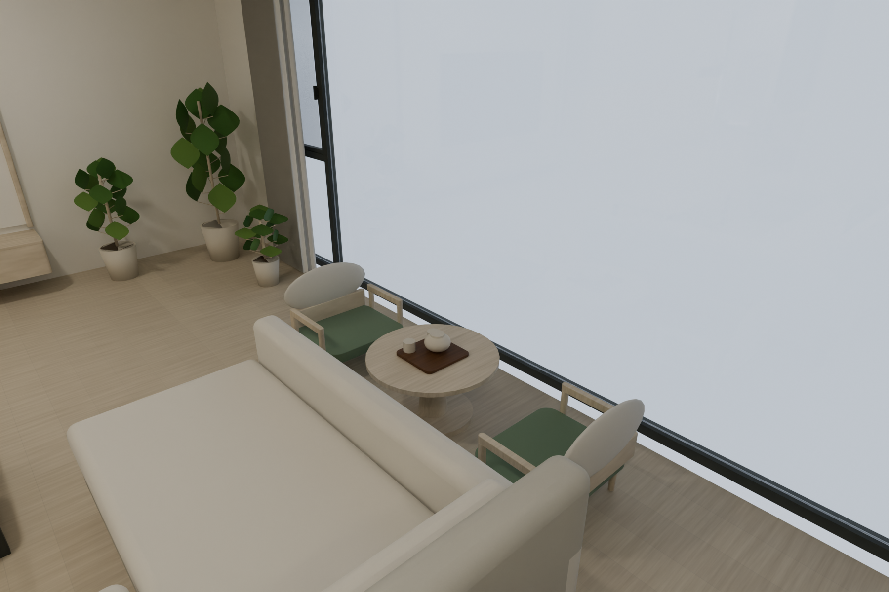
阳台 · 矮茶席 · 实体参考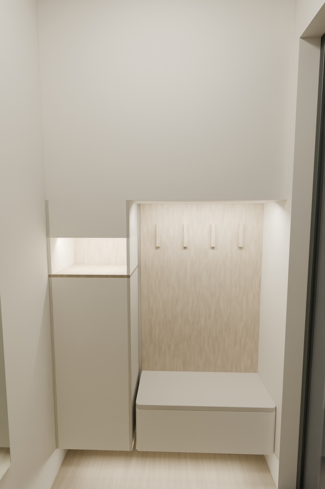
门厅 · 一字柜与换鞋位 · 实体参考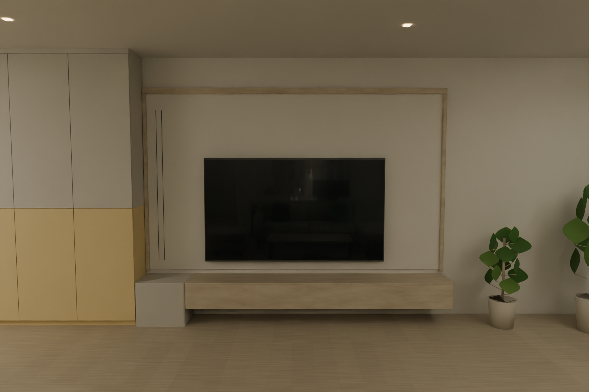
电视墙 · 留白与悬空柜 · 实体参考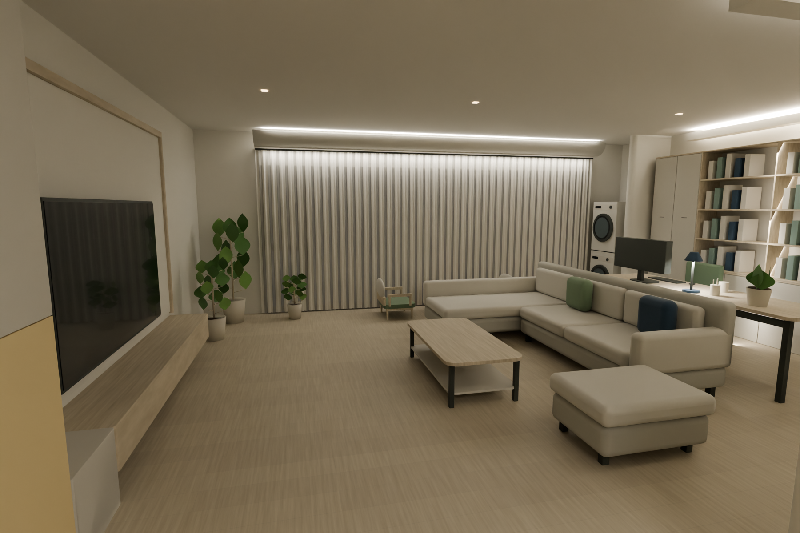
客厅 · 梦幻帘晚间 · 实体参考打开可移动模型 · 23件家具悬停看长宽高，100mm移动；梦幻帘三状态。
以上为内置imagegen实景风格概念效果。外景、植物叶型、帘面微褶和反射为示意，精确几何以实体模型为准。具体帘系统、门开向、灯具与节点待深化。